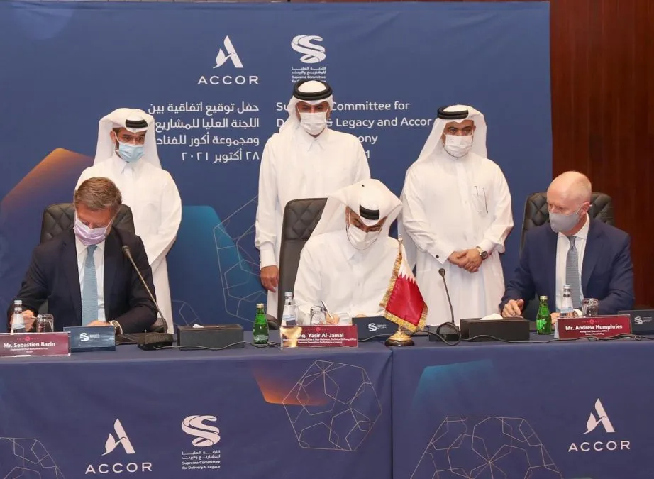

Qatar 2022 World Cup
La Copa Mundial de Fútbol de la FIFA Catar 2022 será la XXII edición de la Copa Mundial de Fútbol masculino organizada por la FIFA. Se desarrollará desde el 20 de noviembre al 18 de diciembre en Catar, que consiguió los derechos de organización el 2 de diciembre de 2010. Será la tercera vez que el torneo se dispute en el continente asiático, tras la edición de 2002, jugada en Corea del Sur y Japón, y la de Rusia 2018 (aunque esta última contaba con una sola sede en territorio asiático), y la primera que se celebra en Asia Occidental. También por primera vez, el torneo tiene lugar en Oriente Próximo, en un país árabe y de mayoría musulmana, así como el de menor extensión territorial. Igualmente será el Mundial de mayor tiempo de espera desde 1950 respecto a su edición anterior, ya que se desarrollará entre los meses de noviembre y diciembre de 2022, a diferencia de los meses habituales de junio y julio. De forma paralela será la Copa más corta desde 1978, pues durará solamente veintinueve días a diferencia de los treinta y dos habituales en los últimos campeonatos.
Equipos participantes:
Durante una sesión en Zúrich, se anunció la repartición de los 31 cupos de la
siguiente manera:
AFC: 4.5 cupos, CAF: 5 cupos, Concacaf: 3.5 cupos,
Conmebol: 4.5 cupos, OFC: 0.5 cupos, UEFA: 13 cupos.
Catar ha clasificado automáticamente como organizador.
En abril de 2018, la Conmebol solicitó a la FIFA que la Copa Mundial de Catar 2022 cuente ya con 48 equipos participantes,
lo cual está previsto para la futura Copa Mundial de Fútbol de 2026. En julio del mismo año, Gianni Infantino declaró que la decisión pudiera estar en manos del comité organizador.
El 16 de marzo de 2019 la FIFA había emitido un comunicado en el que afirmó la posibilidad de que el Mundial de Catar 2022 tuviera un total de 48 participantes. Sin embargo, el 22 de mayo de 2019,
en la reunión del Consejo de la FIFA, de forma oficial,
finalmente se descartó la ampliación por motivos logísticos, por no llegar a tiempo para la organización, lo que sí estará listo para el próximo Mundial de Canadá, Estados Unidos y México 2026.